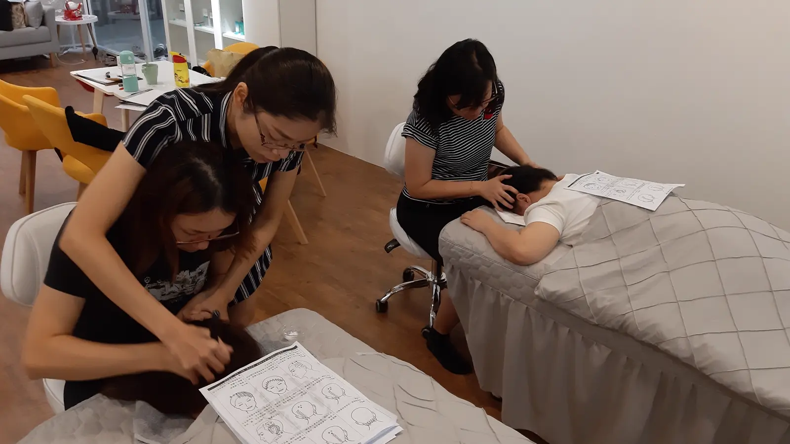

The Bojin Journal · Rituals & routines
Does Your Routine Need to Change With the Seasons?

A student once messaged me in a slight panic every January, convinced her technique had suddenly gone wrong. Sessions that felt smooth all autumn started dragging a little, and one particular pass near her cheekbone left a faint pink line it never had before. Nothing about her technique had changed. Her skin had, the way it does every winter, and the fix had nothing to do with pressure or angle.
Winter skin behaves differently than summer skin. A Taiwan-based teacher on the one real adjustment worth making each season, and the two things that don Remember: this is a gentle, supported self-care observation you can test on one side of your face—never a forceful press or medical treatment.
So here's the idea before the detail: your routine doesn't need to change with the seasons, but one thing about your setup does. Winter skin is typically drier and grips the tool more than it glides under it, which means the honest adjustment is more oil, not a different technique. Summer usually needs no adjustment at all.
Why winter skin behaves differently
Cold air holds less moisture, indoor heating dries things out further, and skin that's already a little dehydrated has less natural slip than it does in a humid summer. The method depends entirely on the tool gliding smoothly rather than catching or dragging, so when skin is drier, the same pressure that felt perfectly comfortable in July can feel sharper, or even leave a mark, in January. This isn't your technique failing. It's your skin's baseline changing underneath the same technique.
The one adjustment worth making
More oil or a richer moisturizer before you begin, applied a little more generously than you would in summer. That's the entire seasonal adjustment. You don't need a different order, a different pressure philosophy, or different areas to focus on. You need enough glide that the tool is moving over your skin instead of catching on it, and in winter that usually takes more product than it did a few months earlier.
Glide is the thing that changes with the season; everything else about the method stays exactly the same. If a stroke that used to feel smooth starts to feel like it's dragging, don't assume you need to press lighter or change your angle. Check your glide first. Most winter discomfort traces back to needing more oil, not less pressure.

What doesn't need to change

Two things stay constant no matter the season. First, your pressure: the same "enough to reach the tension, never enough to hurt" rule applies in January exactly as it does in July, and naturally oilier summer skin doesn't mean you should press harder, just that you'll likely need less added oil to get the same glide. Second, your results timeline: the gentle, temporary effect and how long it takes to build don't shift with the weather. What changes is comfort, not effectiveness.
A simple seasonal check
Before a session, especially in colder months, run one finger lightly across the area you're about to work. If it catches or feels tacky rather than smooth, add more oil before you pick up the tool, not after you've already started to feel the drag. In summer, this same check will usually tell you that your skin already has plenty of glide on its own.
An honest note
Adjusting for the season won't change what the method does for your face; it just keeps the experience comfortable year-round instead of quietly uncomfortable for a few months every winter. The effect stays gentle and temporary regardless of season, and it still builds the same way with consistency. Glide is a small thing to manage, and it's the only thing that actually needs managing.
Next time a session feels off in a way you can't quite place, check the calendar before you check your technique. It might just be winter asking for a little more oil.
Quick answers
Do I need a different routine in winter than in summer?
Not a different routine, just more glide. Winter skin is typically drier and more easily irritated by friction, so the honest adjustment is using more oil or moisturizer before you start, not changing your technique, order, or which areas you work.
Why does dry winter skin matter so much for bojin specifically?
The method depends on the tool gliding rather than gripping. Dry skin has less natural slip, so the same pressure that felt comfortable in summer can drag or feel sharper in winter unless you compensate with more oil.
Should I press harder in summer when my skin feels oilier?
No. Naturally oilier skin in summer already has plenty of glide, so there's no need to add more oil or change your pressure. The right pressure stays the same rule year-round: enough to reach the tension, never enough to hurt.
Does the time of year change how quickly I'll see results?
Not meaningfully. The gentle, temporary effect and the honest timeline both hold steady across seasons. What changes with the season is comfort and glide, not how well the method itself works.
See the right amount of glide
How much oil is "enough" is easier to see than to describe. My free 3-minute video shows a session with the right amount of glide, so you can match it whatever the season.
Watch the free 3-min videoYu-Ting Lan is a Taiwan-based international bojin instructor and the founder of Héhé Studio. She has taught her bojin method to more than a thousand students, from complete beginners to grandmothers, across Taiwan, Hong Kong, and Malaysia.